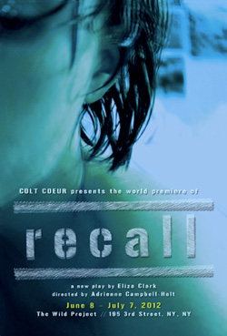

past performance | ||
|  |
Colt Coeur presents the world premiere of RECALL by Eliza Clark | |
|
Close your eyes and count to three. For more information about Colt Coeur, visit www.coltcoeur.org. | ||
upcoming performances |
|||
 |
|||
| EVQ Film Festival 2018 August 20-25 |
|||
performance archives |
|||
| 2018 | 2017 | 2016 | 2015 |
| 2014 | 2013 | 2012 | 2011 |
| 2010 | 2009 | 2008 | 2007 |